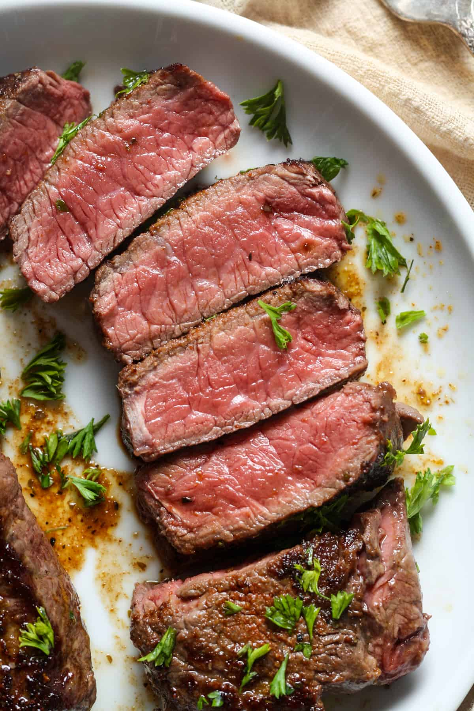

Steak

Description
Steak: Thick cut of beef seasoned, seared, and cooked to desired doneness. High-quality meat and proper cooking techniques are key. Delicious on its own or paired with sides and sauces.
Ingredients
- Beef
- Salt
- Black pepper
- Garlic
- Butter
Steps to make delicious steak.
- Season the steak with salt and black pepper, and any additional seasonings you prefer such as garlic or herbs.
- Heat a pan over high heat, add oil or butter, and sear the steak for a few minutes on each side until it's cooked to your desired level of doneness.
- Remove the steak from the pan and let it rest for a few minutes before slicing and serving.